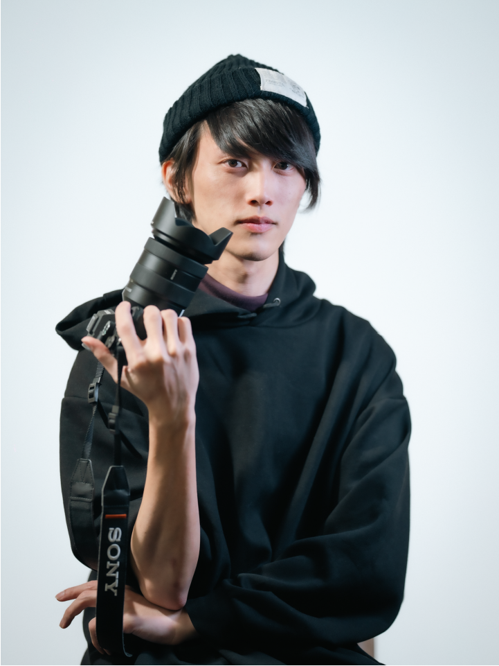

Nozomi Hayashida
Biography
1996年兵庫県生まれ．2020年3月大阪府立大学工学域卒業．2022年3月名古屋大学大学院工学研究科修士課程修了．修士課程在学中に卓越大学院プログラムTMI（Transdisciplinary Mobility Innovation）1期生として参加．2022年4月より名古屋大学大学院工学研究科情報・通信工学専攻博士後期課程に在籍．
2022年8月にXR・映像表現を軸とした制作・研究開発を行うRealidad株式会社を設立．専門は拡張現実（VR/AR/MR）およびヒューマンコンピュータインタラクション（HCI）．JST CREST「[Internet of Realities]」メンバー．
テレプレゼンスや多拠点コミュニケーションにおける「距離」の知覚とその再構成に関心を持ち，XR技術を用いた空間的な共有体験の設計に取り組んでいる．
Education
Research Interests
- Multi-site Telepresence and Group Communication
- XR-based Experience and Media Design
- Human-Computer Interaction (HCI)
- Subjective Perception and Reconstruction of Distance
- Design of Shared Reality and Reality Landscapes
Skills / Tools
-
Development
Unity (C#), Python, WebRTC, OpenCV, MediaPipe
-
XR / Media
360° Video, Virtual Production, XR Experience Design
-
Creative Tools
Adobe Premiere Pro, After Effects, Illustrator, Photoshop
-
Research
User Study Design, Experimental Design, Data Analysis
Photography
-
Camera Bodies
SONY ILCE-7RM5, SONY ILCE-7CM2, OM SYSTEM OM-1 Mark II
-
Lenses
FE 14mm F1.8 GM, FE 50mm F1.2 GM, FE 24-70mm F2.8 GM, FE 135mm F1.8 GM, SIGMA 150-600mm F5-6.3 DG DN OS, TTArtisan Tilt 50mm F1.4, M.ZUIKO DIGITAL 25mm F1.8, M.ZUIKO DIGITAL 45mm F1.8, M.ZUIKO DIGITAL ED 12-100mm F4.0 IS PRO